Note
Go to the end to download the full example code.
Select unstructured data#
Xarray has flexible tools for label based selection, in the form of .sel
and .isel for index selection. This works well for structured data since
the orthogonality of the x and y axes is reflected in the axes of the
underlying arrays. This orthogonality does not exist for unstructured grids, as
the data for all faces cannot be stored in a two-dimensional array and is
stored in a one-dimensional array instead.
Xugrid provides tools for convenient spatial selection, primarily via the
.ugrid.sel method; its behavior is comparable to xarray’s .sel method.
The .ugrid.sel method should only be used for selection in the x or y
dimension. Selections along other dimension (such as time) should be performed
by xarray’s .sel instead (without the ugrid accessor).
The examples below demonstrate the various ways to select data.
Imports#
The following imports suffice for the examples.
import matplotlib.pyplot as plt
import numpy as np
import shapely
import xugrid as xu
We will take a look at a sample dataset: a triangular grid with the surface elevation of the Netherlands.
uda = xu.data.elevation_nl()
uda.ugrid.plot(vmin=-20, vmax=90, cmap="terrain")
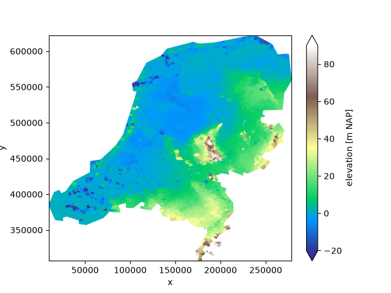
<matplotlib.collections.PolyCollection object at 0x7f1d5ae46e10>
We will start by demonstrating the behavior of .ugrid.sel. This method
takes several types of arguments, like its xarray equivalent. The return type
and shape of the selection operation depends on the argument given.
Selection |
Result type |
|---|---|
Subset |
xugrid |
Point |
xarray |
Line |
xarray |
Grid subset selection#
A subset of the unstructured grid is returned by using slices without a step:
subset = uda.ugrid.sel(x=slice(100_000.0, 200_000.0), y=slice(450_000.0, 550_000.0))
subset.ugrid.plot(vmin=-20, vmax=90, cmap="terrain")
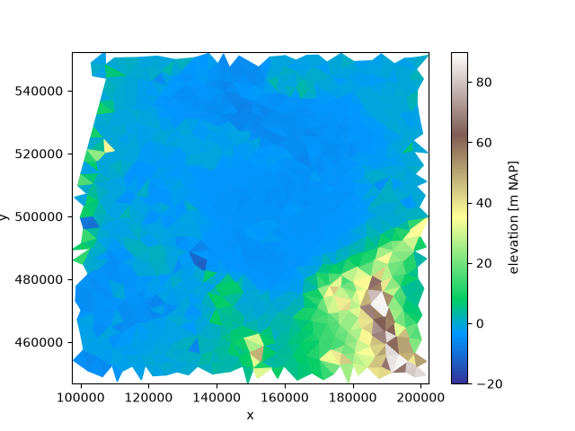
<matplotlib.collections.PolyCollection object at 0x7f1d9ce68ec0>
The default arguments of x and y are: slice(None, None).
In such a case the entire grid is returned.
subset = uda.ugrid.sel()
subset.ugrid.plot(vmin=-20, vmax=90, cmap="terrain")

<matplotlib.collections.PolyCollection object at 0x7f1d5b0b11f0>
Note
None in a Python slice can be interpreted as “from the start” or “up to
and including the end”.
This means we can easily select along a single dimension:
subset = uda.ugrid.sel(x=slice(100_000.0, 200_000.0))
subset.ugrid.plot(vmin=-20, vmax=90, cmap="terrain", aspect=1, size=5)
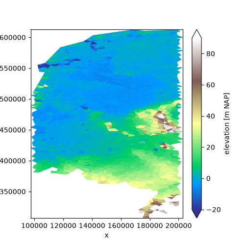
<matplotlib.collections.PolyCollection object at 0x7f1d9bdc11f0>
Or, using None if we only care about the start:
subset = uda.ugrid.sel(x=slice(100_000.0, None))
subset.ugrid.plot(vmin=-20, vmax=90, cmap="terrain", aspect=1, size=5)
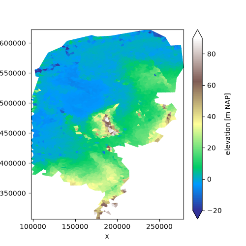
<matplotlib.collections.PolyCollection object at 0x7f1d9cacf170>
Point selection#
Since point data can be represented as an ordinary xarray DataArray with x and y coordinates, all point selection result in xarray DataArrays rather than UgridDataArrays with an associated unstructured grid topology.
We will use a utility function to show what is selected on the map:
def show_point_selection(uda, da):
_, ax = plt.subplots()
uda.ugrid.plot(ax=ax, vmin=-20, vmax=90, cmap="terrain")
ax.scatter(da["mesh2d_x"], da["mesh2d_y"], color="red")
ax.set_aspect(1.0)
Two values will select a point:
da = uda.ugrid.sel(x=150_000.0, y=463_000.0)
show_point_selection(uda, da)
da
Multiple values are broadcasted against each other (“outer indexing”). If we select by three x values and two y values, the result is a collection of six points:
da = uda.ugrid.sel(x=[125_000.0, 150_000.0, 175_000.0], y=[400_000.0, 465_000.0])
show_point_selection(uda, da)
da
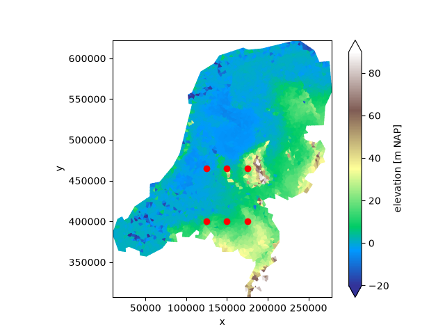
To select points without broadcasting, use .ugrid.sel_points instead:
da = uda.ugrid.sel_points(
x=[125_000.0, 150_000.0, 175_000.0], y=[400_000.0, 430_000.0, 465_000.0]
)
show_point_selection(uda, da)
da
We can sample points along a line as well by providing slices with a step:
da = uda.ugrid.sel(x=slice(100_000.0, 200_000.0, 10_000.0), y=465_000.0)
show_point_selection(uda, da)
da
Two slices with a step results in broadcasting:
da = uda.ugrid.sel(
x=slice(100_000.0, 200_000.0, 10_000.0), y=slice(400_000.0, 500_000.0, 10_000.0)
)
show_point_selection(uda, da)
da
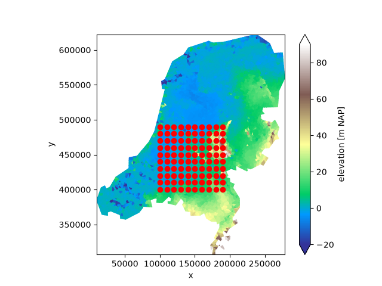
As well as a slice with a step and multiple values:
da = uda.ugrid.sel(x=slice(100_000.0, 200_000.0, 10_000.0), y=[400_000.0, 430_000.0])
show_point_selection(uda, da)
da
Line selection#
Since line data can be represented as an ordinary xarray DataArray with x and y coordinates, all line selection result in xarray DataArrays rather than UgridDataArrays with an associated unstructured grid topology.
Line selection is performed by finding all faces that are intersected by the line.
We start by defining a utility to show the selection again:
def show_line_selection(uda, da, line_x=None, line_y=None):
_, (ax0, ax1) = plt.subplots(ncols=2, figsize=(10, 5))
uda.ugrid.plot(ax=ax0, vmin=-20, vmax=90, cmap="terrain")
da.plot(ax=ax1, x="mesh2d_s")
if line_x is None:
ax0.axhline(line_y, color="red")
elif line_y is None:
ax0.axvline(line_x, color="red")
else:
ax0.plot(line_x, line_y, color="red")
ax0.set_aspect(1.0)
A single value for either x or y in .ugrid.sel will select values along a
line:
da = uda.ugrid.sel(y=465_000.0)
show_line_selection(uda, da, line_y=465_000.0)
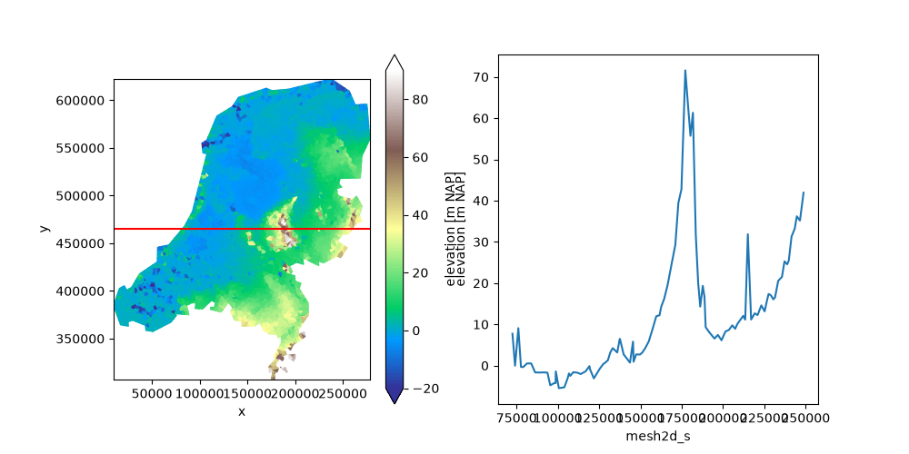
Line segments that are not axis aligned can be selected with
.ugrid.intersect_line:
da = uda.ugrid.intersect_line(start=(60_000.0, 400_000.0), end=(190_000.0, 475_000.0))
show_line_selection(uda, da, (60_000.0, 190_000.0), (400_000.0, 475_000.0))
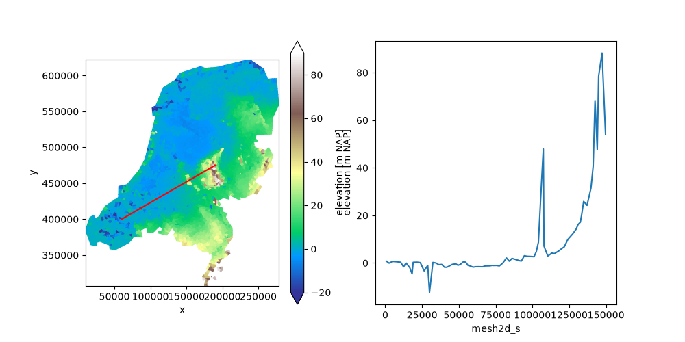
Linestrings can be selected with .ugrid.intersect_linestring:
linestring = shapely.geometry.LineString(
[
(60_000.0, 400_000.0),
(190_000.0, 400_000.0),
(120_000.0, 575_000.0),
(250_000.0, 575_000.0),
]
)
da = uda.ugrid.intersect_linestring(linestring)
show_line_selection(uda, da, *shapely.get_coordinates(linestring).T)
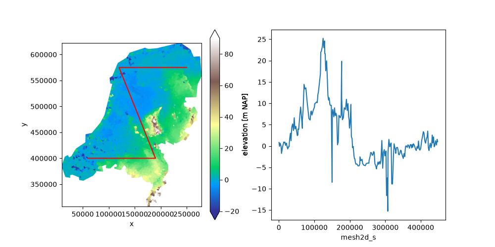
This will work for any type of shapely line:
ring = shapely.geometry.Point(155_000.0, 463_000).buffer(50_000.0).exterior
da = uda.ugrid.intersect_linestring(ring)
show_line_selection(uda, da, *shapely.get_coordinates(ring).T)
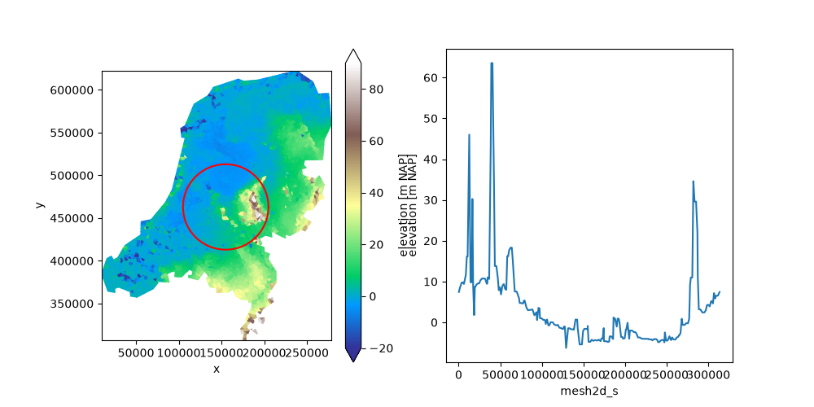
Index selection#
We may also use ordinary index selection to create a subset. This does not
require the .ugrid accessor. For example, to take only the first
thousands faces:
subset = uda.isel(mesh2d_nFaces=np.arange(1000))
subset.ugrid.plot(vmin=-20, vmax=90, cmap="terrain", aspect=1, size=5)
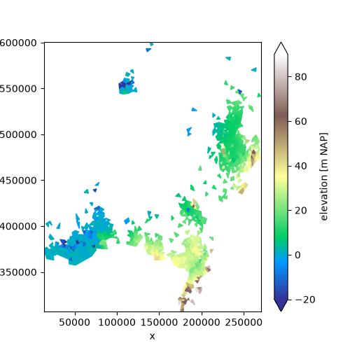
<matplotlib.collections.PolyCollection object at 0x7f1d5a14cfe0>
For a 2D topology, selecting faces by an index always results in a valid topology. However, selecting by node or edge does not give a guarantee that the result forms a valid 2D topology: e.g. if we only select two nodes, or only two edges from a face, the result cannot form a valid 2D face.
To avoid generating invalid topologies, xugrid always checks whether the result of a selection results in a valid 2D topology and raises an error if the result is invalid.
In general, index selection should only be performed on the “core” dimension of the UGRID topology. This is the edge dimension for 1D topologies, and the face dimension for 2D topologies.
Total running time of the script: (0 minutes 3.218 seconds)